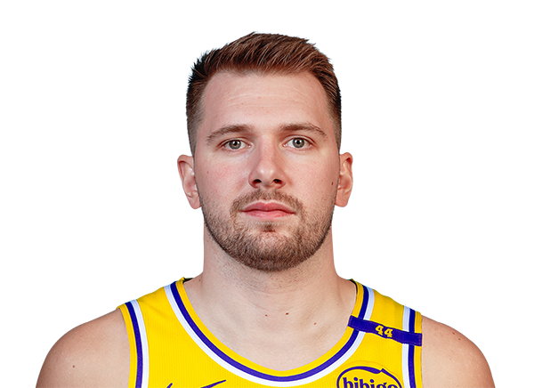

Esta es una página que te otorga las mejores jugadas y los juegos más relevantes del basketball
(de jugadores blancos)
Luka Dončić es un baloncestista esloveno, considerado uno de los talentos más destacados de la NBA. Nació el 28 de febrero de 1999 en Liubliana, Eslovenia. Dončić juega como base o escolta para los Dallas Mavericks y es reconocido por su habilidad para anotar, asistir y rebote. Antes de llegar a la NBA, jugó profesionalmente en el Real Madrid, donde ganó varios títulos. Desde su llegada a la liga en 2018, ha sido un jugador destacado, logrando múltiples selecciones al All-Star y siendo considerado uno de los mejores jugadores jóvenes de la historia de la NBA

haz clic a la imagen para ver jugadas
ir a pagina 3

haz clic para ir a página 3
A continuacion encontrarás musica de la nba
A continuacion encontrarás videos y mejores jugadas de jugadores blancos